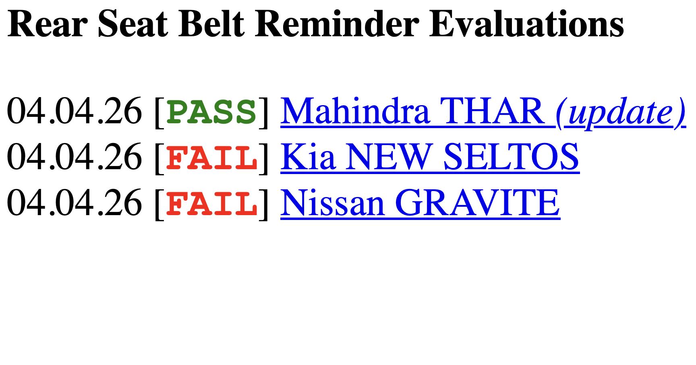

New Kia Seltos and Nissan Gravite in TYC's latest Rear Seatbelt Reminder Evaluation | The Yawning Chihuahua

The Yawning Chihuahua
Home | Seatbelt reminder evaluation | Twitter | Instagram | YouTube | Legacy website
NOTICE
New Kia Seltos and Nissan Gravite in TYC's latest Rear Seatbelt Reminder Evaluation
04.04.2026

The rear seatbelt reminder (SBR) evaluations for three models have been published today: the updated Mahindra Thar, new Kia Seltos, and the Nissan Gravite.
The Mahindra Thar, updated with rear seatbelt reminders in October 2025, is awarded PASS: it has occupant detection (Mahindra PODS) in both rear seats, and issues an audio and visual signal in when any rear seatbelt is not fastened on an occupied seat. This is a marked improvement from a previous version of the Thar evaluated under defunct project Gobar NCRAP which was not equipped with any form of rear seatbelt reminder, and received Gobar NCRAP's then-lowest D grade.
The Kia Seltos and Nissan Gravite receive FAIL result: their rear seatbelt reminders do not have occupant detection, and only issue an audio signal when a rear seatbelt is fastened and then unfastened on the move. This means that a rear occupant can sit unbelted, and yet no audible signal will be issued, despite the cars having rear seatbelt reminders on paper.
More information about these results, including datasheets and sources of information for all cars are on the Rear Seatbelt Reminder Evaluations page.
-TYC
click to go back home